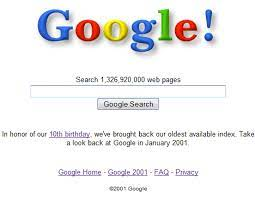

Google began in January 1996 as a research project by Larry Page and Sergey Brin when they were both PhD students at Stanford University in California. The project initially involved an unofficial "third founder", Scott Hassan, the original lead programmer who wrote much of the code for the original Google Search engine, but he left before Google was officially founded as a company; Hassan went on to pursue a career in robotics and founded the company Willow Garage in 2006.
While conventional search engines ranked results by counting how many times the search terms appeared on the page, they theorized about a better system that analyzed the relationships among websites. They called this algorithm PageRank; it determined a website's relevance by the number of pages, and the importance of those pages that linked back to the original site. Page told his ideas to Hassan, who began writing the code to implement Page's ideas.
Page and Brin originally nicknamed the new search engine "BackRub", because the system checked backlinks to estimate the importance of a site. Hassan as well as Alan Steremberg were cited by Page and Brin as being critical to the development of Google. Rajeev Motwani and Terry Winograd later co-authored with Page and Brin the first paper about the project, describing PageRank and the initial prototype of the Google search engine, published in 1998. Héctor García-Molina and Jeff Ullman were also cited as contributors to the project. PageRank was influenced by a similar page-ranking and site-scoring algorithm earlier used for RankDex, developed by Robin Li in 1996, with Larry Page's PageRank patent including a citation to Li's earlier RankDex patent; Li later went on to create the Chinese search engine Baidu.
Eventually, they changed the name to Google; the name of the search engine was a play on the word googol, a very large number written 10100 (1 followed by 100 zeros), picked to signify that the search engine was intended to provide large quantities of information.
The domain name www.google.com was registered on September 15, 1997,and the company was incorporated on September 4, 1998. It was based in the garage of Susan Wojcicki in Menlo Park, California. Craig Silverstein, a fellow PhD student at Stanford, was hired as the first employee.